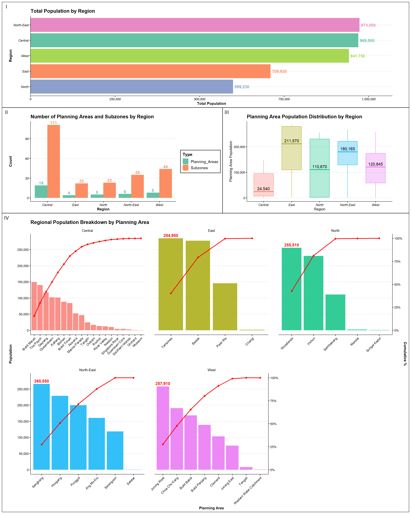
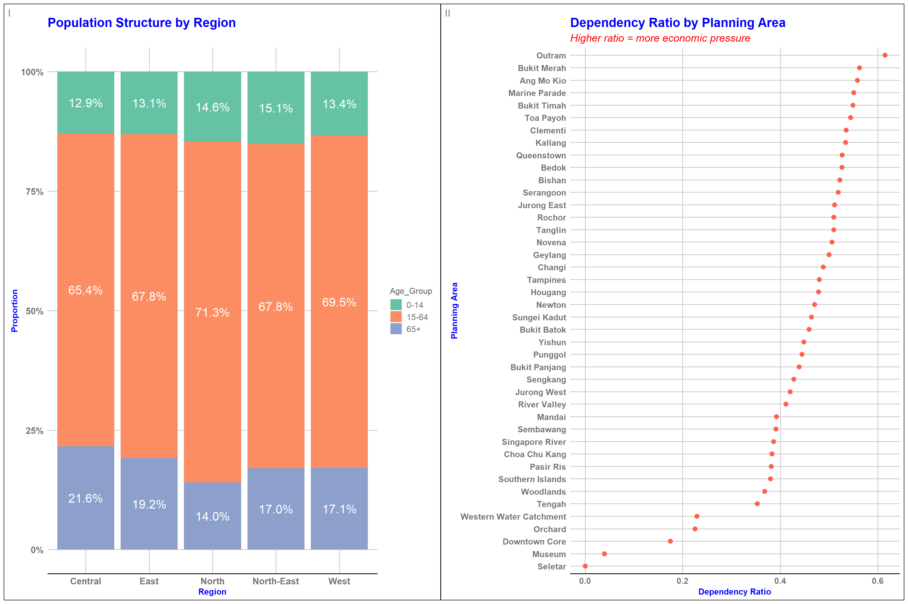
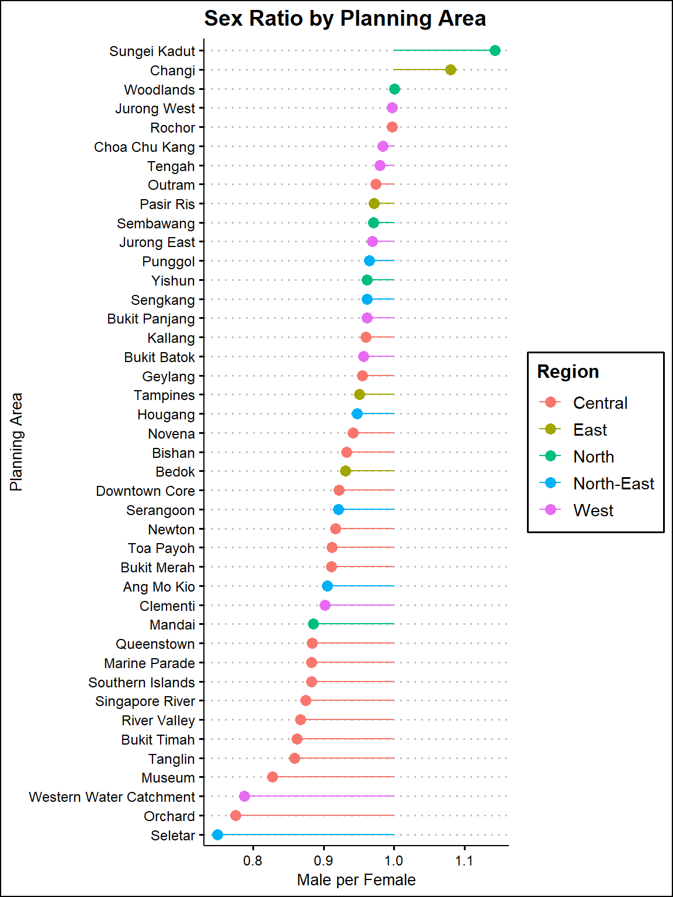

pacman::p_load(ggrepel, patchwork,
ggthemes, hrbrthemes,
tidyverse, tidytext, scales) Take-home Exercise 1 (Part 1)
Overview
This study provides a comprehensive demographic analysis of Singapore, leveraging multiple visualizations to uncover patterns in population distribution, age structure, dependency ratios, and gender balance across regions and planning areas. The first section presents a suite of five integrated charts that offer both macro and micro perspectives on population distribution—highlighting regional totals, intra-regional variability, the number of administrative units, and the concentration of population within selected planning areas. The second section examines the population structure by age group across regions and quantifies the dependency ratio at the planning area level, which reflects the economic pressure placed on the working-age population by younger and older dependents. The third section investigates the variation in sex ratios across planning areas, identifying gender imbalances and regional trends.
Dataset used: Singapore Residents by Planning Area / Subzone, Single Year of Age and Sex, June 2024
Preparation
Install packages
Import data
data <- read_csv("respopagesex2024.csv")Data Wrangling
Data Discovery and Cleaning
# Summary statistics
summary(data) PA SZ Age Sex
Length:60424 Length:60424 Length:60424 Length:60424
Class :character Class :character Class :character Class :character
Mode :character Mode :character Mode :character Mode :character
Pop Time
Min. : 0.0 Min. :2024
1st Qu.: 0.0 1st Qu.:2024
Median : 20.0 Median :2024
Mean : 69.4 Mean :2024
3rd Qu.: 90.0 3rd Qu.:2024
Max. :1180.0 Max. :2024 # Count of missing values per column
colSums(is.na(data)) PA SZ Age Sex Pop Time
0 0 0 0 0 0 # Count of duplicated rows
sum(duplicated(data))[1] 0# View duplicated rows (if any)
data[duplicated(data), ]# A tibble: 0 × 6
# ℹ 6 variables: PA <chr>, SZ <chr>, Age <chr>, Sex <chr>, Pop <dbl>,
# Time <dbl>Summary interpretation:
- Total observations: 60,424 rows. No missing values and duplicates were found.
- Current data types: PA, SZ, Age, Sex, Time are character. Pop and Time are numeric.
- Issues to be fixed:
- The “Age” column is currently of type character due to the presence of the value “90 and Over”. To convert the column to numeric, this value is transformed into a numeric-compatible format. I replace this with “90” to ensure consistent analysis without assuming more than what the data provides.
# Check unique values of Age column
unique(data$Age) [1] "0" "1" "2" "3" "4"
[6] "5" "6" "7" "8" "9"
[11] "10" "11" "12" "13" "14"
[16] "15" "16" "17" "18" "19"
[21] "20" "21" "22" "23" "24"
[26] "25" "26" "27" "28" "29"
[31] "30" "31" "32" "33" "34"
[36] "35" "36" "37" "38" "39"
[41] "40" "41" "42" "43" "44"
[46] "45" "46" "47" "48" "49"
[51] "50" "51" "52" "53" "54"
[56] "55" "56" "57" "58" "59"
[61] "60" "61" "62" "63" "64"
[66] "65" "66" "67" "68" "69"
[71] "70" "71" "72" "73" "74"
[76] "75" "76" "77" "78" "79"
[81] "80" "81" "82" "83" "84"
[86] "85" "86" "87" "88" "89"
[91] "90_and_Over"# Convert Age to numeric
data <- data %>%
mutate(Age = if_else(Age == "90_and_Over", "90", Age)) %>% # Replace string with number
mutate(Age = as.numeric(Age)) # Convert to numeric
# Check the new data type
class(data$Age)[1] "numeric"- Change column names for “PA”, “SZ”, and “Pop” to enhance clarity and readability.
# Rename columns
data <- data %>%
rename(
Planning_Area = PA,
Sub_Zone = SZ,
Population = Pop
)- Remove unnecessary column “Time” since all values are 2024 - the year in which the data was collected.
data <- data %>% select(-Time)- Remove planning areas with 0 population since they don’t contribute any demographic information (no age, sex data to analyze). These areas might be undeveloped, industrial, or restricted areas.
data <- data %>%
filter(Population > 0)
data %>%
group_by(Planning_Area) %>%
summarise(Total_Pop = sum(Population)) # A tibble: 42 × 2
Planning_Area Total_Pop
<chr> <dbl>
1 Ang Mo Kio 160450
2 Bedok 277660
3 Bishan 88210
4 Bukit Batok 168390
5 Bukit Merah 149390
6 Bukit Panjang 138730
7 Bukit Timah 84250
8 Changi 1830
9 Choa Chu Kang 190640
10 Clementi 102960
# ℹ 32 more rowsAfter removal, 42 planning areas remain in the dataset.
- Final review after cleaning
summary(data) Planning_Area Sub_Zone Age Sex
Length:37243 Length:37243 Min. : 0.00 Length:37243
Class :character Class :character 1st Qu.:22.00 Class :character
Mode :character Mode :character Median :44.00 Mode :character
Mean :44.32
3rd Qu.:66.00
Max. :90.00
Population
Min. : 10.0
1st Qu.: 30.0
Median : 70.0
Mean : 112.6
3rd Qu.: 150.0
Max. :1180.0 colSums(is.na(data))Planning_Area Sub_Zone Age Sex Population
0 0 0 0 0 Feature Engineering
- Create Age Groups
data <- data %>%
mutate(
Age_Group = cut(
Age,
breaks = c(-1, 14, 64, Inf),
labels = c("0-14", "15-64", "65+"),
right = TRUE
)
)The age groups were defined as 0–14, 15–64, and 65+ to align with the standard demographic classification used in population studies and official statistics. These ranges correspond to:
0–14: Young dependents (not in the workforce).
15–64: Working-age population (economically active group).
65+: Elderly dependents (retired).
- Create Regions
The Region column is created to group planning areas into broader zones, enabling regional-level analysis, comparison, and visualization. I referred to this website for the regions and planning areas mapping.
# Region mapping table
region_mapping <- tibble::tibble(
Planning_Area = c(
# Central
"Bishan", "Bukit Merah", "Bukit Timah", "Downtown Core", "Geylang", "Kallang",
"Marine Parade", "Museum", "Newton", "Novena", "Orchard", "Outram",
"Queenstown", "River Valley", "Rochor", "Singapore River", "Southern Islands",
"Tanglin", "Toa Payoh",
# East
"Bedok", "Changi", "Pasir Ris", "Tampines",
# North-East
"Ang Mo Kio", "Hougang", "Punggol", "Sengkang", "Serangoon", "Seletar",
# North
"Mandai", "Sembawang", "Sungei Kadut", "Woodlands", "Yishun",
# West
"Bukit Batok", "Bukit Panjang", "Choa Chu Kang", "Clementi", "Jurong East",
"Jurong West", "Tengah", "Western Water Catchment"
),
Region = c(
rep("Central", 19),
rep("East", 4),
rep("North-East", 6),
rep("North", 5),
rep("West", 8)
)
)
# Join with data
data <- data %>%
left_join(region_mapping, by = "Planning_Area")Data Visualization
1. Singapore’s Population Distribution and Density
This full visualization provides a multi-layered view of Singapore’s population landscape, highlighting regional totals, planning area distributions, administrative granularity, and Pareto-based breakdowns of population concentration.
The process of creating this visualization is as below:
- Step 1: Creating 4 individual plots
Plot 1: Total population by Region
Data is grouped by
Regionto get total population per region.The regions are sorted in descending order of population.
A horizontal bar chart is created using
geom_col(). Labels showing total population are added withgeom_text()using comma formatting. The chart is flipped horizontally usingcoord_flip().Set2color palette is used for a visually distinct fill and label color per region. The plot usestheme_clean()and custom font styling for clarity.
Plot 2: Distribution of Planning Areas’ population by Region
Total population is aggregated at the Planning Area level, grouped by Region.
A boxplot is drawn with
geom_boxplot()to show the distribution of planning area populations within each region.Outliers are highlighted in tomato red, and median values are labeled using
stat_summary()for easier interpretation.
Plot 3: Count of Planning Areas and Sub-Zones by Region
n_distinct()is used to count the number of unique planning areas and sub-zones in each region.The data is then reshaped to a long format using
pivot_longer()for grouped plottingA grouped bar chart is created using
geom_col()to compare the count of Planning Areas & Sub-Zones among Regions.Labels show exact counts above each bar, with the same color as the bar type.
Plot 4: Regional Population Breakdown by Planning Area
For each Region, planning areas are ranked by population.
Then, cumulative population and cumulative percentage for the Pareto curve.
A scale factor is computed to align the cumulative percentage line on the same y-axis.
A Pareto chart is created with:
Bars representing population by planning area.
Line and points representing cumulative % scaled to dual y-axis.
Facets by Region for side-by-side comparisons.
Top planning area in each non-Central region is labeled.
Step 2: Combining all plots
The four plots are combined into one cohesive layout using
patchwork:Top: Bar chart (Plot 1)
Middle: Boxplot and grouped bar chart side-by-side (Plots 2 and 3)
Bottom: Faceted Pareto chart (Plot 4)
Relative heights = c(0.6, 0.6, 1.8) using
plot_layout()are adjusted to give the Pareto chart more visual space.

library(scales)
# Aggregate population by region, planning area, and sub-zone
pop <- data %>%
group_by(Region, Planning_Area, Sub_Zone) %>%
summarise(total_pop = sum(Population), .groups="drop")
# (Plot 1) Total population by Region
region_pop <- pop %>%
group_by(Region) %>%
summarise(total_pop = sum(total_pop), .groups="drop") %>%
arrange(desc(total_pop))
# Create horizontal bar chart
p1 <- ggplot(region_pop, aes(x = reorder(Region, total_pop), y = total_pop, fill = Region)) +
geom_col() +
geom_text(aes(label = comma(total_pop), color = Region),
hjust = -0.1, size = 4, fontface = "bold") +
coord_flip() #flip to horizontal +
scale_y_continuous(labels = comma, expand = expansion(mult = c(0, 0.1))) +
labs(title = "Total Population by Region", x = "Region", y = "Total Population") +
scale_fill_brewer(palette = "Set2") +
scale_color_brewer(palette = "Set2") +
theme_clean() +
theme(plot.title = element_text(face = "bold"),
axis.title = element_text(face = "bold"),
axis.text = element_text(face = "italic"),
legend.position = "none")
# (Plot 2) Distribution of Planning‐Area Populations by Region
box_data <- pop %>%
group_by(Region, Planning_Area) %>%
summarise(total_pop = sum(total_pop), .groups = "drop")
p2 <- ggplot(box_data, aes(x = Region, y = total_pop, fill = Region, color = Region)) +
geom_boxplot(
width = 0.7, # thickness of the boxes
alpha = 0.3, # transparency of the boxes
outlier.shape = 16, outlier.size = 1.5, outlier.colour="tomato"
) +
# add label for the median
stat_summary(
fun = median,
geom = "text",
aes(label = comma(..y..)),
color = "black",
size = 4,
vjust = -0.5
) +
labs(
title = "Planning Area Population Distribution by Region",
x = "Region",
y = "Planning Area Population"
) +
scale_y_continuous(labels = scales::comma) +
theme_clean() +
theme(
plot.title = element_text(face = "bold"),
axis.text = element_text(face = "italic"),
legend.position = "none"
)
# (Plot 3) Count of Planning Areas & Sub-Zones by Region
region_counts <- pop %>%
group_by(Region) %>%
summarise(
Planning_Areas = n_distinct(Planning_Area),
Subzones = n_distinct(Sub_Zone),
.groups="drop"
)
region_long <- region_counts %>%
pivot_longer(cols = c(Planning_Areas, Subzones),
names_to = "Type", values_to = "Count")
p3 <- ggplot(region_long, aes(x = Region, y = Count, fill = Type)) +
geom_col(position = "dodge") +
geom_text(aes(label = Count, color = Type),
position = position_dodge(width = 0.9),
vjust = -0.3, size = 4, fontface = "bold") +
labs(title = "Number of Planning Areas and Subzones by Region",
x = "Region", y = "Count") +
scale_fill_brewer(palette = "Set2", name = "Type") +
scale_color_brewer(palette = "Set2") +
theme_clean() +
theme(plot.title = element_text(face="bold"),
axis.title = element_text(face="bold"),
axis.text = element_text(face="italic"))
# (Plot 4) Regional Population Breakdown by Planning Area
pareto_data <- pop %>%
group_by(Region, Planning_Area) %>%
summarise(total_pop = sum(total_pop), .groups = "drop") %>%
group_by(Region) %>%
arrange(desc(total_pop), .by_group = TRUE) %>%
mutate(
rank = row_number(),
cum_pop = cumsum(total_pop),
cum_pct = cum_pop / sum(total_pop),
label = comma(total_pop)
) %>%
ungroup()
# Scale factor for dual y-axis
scale_fac <- max(pareto_data$total_pop)
# Pareto chart with facets
p4 <- ggplot(pareto_data, aes(x = reorder(Planning_Area, -total_pop), y = total_pop)) +
geom_col(aes(fill = Region), show.legend = FALSE, alpha = 0.8) +
geom_line(aes(y = cum_pct * scale_fac, group = 1), color = "red", size = 1) +
geom_point(aes(y = cum_pct * scale_fac), color = "red", size = 2) +
geom_text(data = pareto_data %>% filter(rank == 1 & Region != "Central"),
aes(label = label), vjust = -0.5, size = 3, color = "red", fontface="bold") +
scale_y_continuous(
name = "Population",
labels = comma,
breaks = seq(0, 350000, by = 50000),
sec.axis = sec_axis(~ . / scale_fac,
name = "Cumulative %",
labels = percent_format(accuracy = 1))
) +
facet_wrap(~ Region, scales = "free_x") +
labs(
title = "Regional Population Breakdown by Planning Area",
x = "Planning Area", y = "Population"
) +
theme_clean() +
theme(panel.spacing = unit(1, "cm"),
axis.title = element_text(face="bold"),
axis.text.x = element_text(angle = 45, hjust = 1))
# Combine all the charts using patchwork
p1 / (p3 | p2) / p4 +
plot_layout(heights = c(0.6, 0.6, 1.8) )Key insights from the visualization:
Urban Structure and Planning Complexity Differ Sharply Across Regions
Although the Central region has a total population similar to the North-East (~973K) and West (~942K), it has significantly more planning areas (19) and sub-zones (111), indicating greater land use diversity and functional complexity. This contrasts with the East and North-East, where fewer planning areas serve large residential populations, indicating more concentrated residential zoning. These differences affect how urban policies, zoning regulations, and public services must be tailored to fit the region’s functional layout.
Population concentration varies by Region
The boxplot and Pareto charts together show significant intra-regional variation: East and North have the widest spread, from very low to high planning area populations, while Central, North-East and East have more uniform residential distribution. For instance, Tampines and Bedok alone comprise nearly 60% of the East’s total population.
This uneven load places infrastructure and service pressure on a few high-density zones, requiring targeted investments in transport, schools, and healthcare facilities. Meanwhile, lower-population areaspresent opportunities for future development or re-purposing.
2. Demographic Pressure and Age Structure Across Singapore’s Planning Areas
This chart aims to visualize the age composition across regions and assess the economic burden of dependents by comparing dependency ratios across planning areas in Singapore.
The process of creating this visualization is as below:
- Step 1: Data Preparation – Age Group Aggregation
The population data is grouped by Region, Planning Area, and Age Group.
The three broad age categories (children: 0-14, working-age: 15-64 elderly: 65+) are explicitly ordered to ensure correct stacking in charts.
- Step 2: Creating 2 individual plots
Plot 1: Population Structure by Region
First, aggregate age-group data at the regional level, then computes the proportion of each age group relative to the region’s total population.
A stacked bar chart is then created using
geom_bar(), with Region as x-axis, Proportion of each group as y-axis, and fill color based on age group.Each bar segment is labeled with a percentage for clarity.
A custom theme (theme_gdocs) and Set2 color palette are used for visual appeal.
Plot 2: Dependency Ratio by Planning Area
The dataset is reshaped from long to wide format to calculate dependency ratios:
Formula: (children + elderly) / working-age
A higher ratio means greater economic burden on the working population.
A dot plot is created using
geom_pointto show the dependency ratio by planning area, sorted in descending order.Planning areas with the highest economic burden are shown at the top.
Titles and subtitle communicate economic implications of aging or youth-heavy populations.
- Combining 2 charts into 1 composite plot
- The two plots are arranged side by side using the
patchworkpackage.

# Aggregate population data by age group
pop_by_age <- data %>%
group_by(Region, Planning_Area, Age_Group) %>%
summarise(Population = sum(Population), .groups = "drop") %>%
mutate(Age_Group = factor(Age_Group, levels = c("0-14", "15-64", "65+")))
# Plot 1 - Population Structure by Region
# Aggregate for regional proportion
region_age_prop <- pop_by_age %>%
group_by(Region, Age_Group) %>%
summarise(Population = sum(Population), .groups = "drop") %>%
group_by(Region) %>%
mutate(Proportion = Population / sum(Population))
p1 <- ggplot(region_age_prop, aes(
x = Region,
y = Proportion,
fill = Age_Group
)) +
geom_bar(stat = "identity") +
geom_text(aes(label = scales::percent(Proportion, accuracy = 0.1)),
position = position_stack(vjust = 0.5), # center within each segment
size = 6, color = "white") +
labs(
title = "Population Structure by Region",
x = "Region", y = "Proportion"
) +
scale_y_continuous(labels = scales::percent) +
scale_fill_brewer(palette = "Set2") +
theme_gdocs() +
theme(plot.title = element_text(size = 18, face = "bold", color = "blue"),
axis.title = element_text(face = "bold", color = "blue"),
axis.text = element_text(size = 13, face = "bold"))
# Plot 2 - Dependency Ratio by Planning Area
dependency_df <- pop_by_age %>%
pivot_wider(names_from = Age_Group, values_from = Population, values_fill = 0) %>%
filter(`15-64` > 0) %>%
mutate(dependency_ratio = (`0-14` + `65+`) / `15-64`) %>%
arrange(desc(dependency_ratio))
p2 <- ggplot(dependency_df, aes(x = dependency_ratio, y = reorder(Planning_Area, dependency_ratio))) +
geom_point(color = "tomato", size = 3) +
labs(
title = "Dependency Ratio by Planning Area",
subtitle = "Higher ratio = more economic pressure",
x = "Dependency Ratio", y = "Planning Area"
) +
theme_gdocs() +
theme(
plot.title = element_text(size= 18, face = "bold", color = "blue"),
plot.subtitle = element_text(size = 15, face = "italic", color = "red"),
axis.title = element_text(face = "bold", color="blue"),
axis.text = element_text(face = "bold"))
# Combine into a composite figure
(p1 | p2) +
plot_annotation(tag_levels = "I")Key insights from the visualization:
- Age structure varies across regions
The working-age group (15–64) dominates across all regions but is highest in the North (71.3%), suggesting a strong labor base.
The elderly population (65+) is most prominent in the Central region (21.6%), indicating an aging population and possibly a concentration of older, long-established residential areas. In contrast, the North-East and West have higher proportions of children (0–14), around 15%, suggesting younger family populations and possibly newer housing developments attractive to younger households.
- Dependency Ratios Vary Greatly by Planning Area
Outram has the highest dependency ratio (over 0.6), followed closely by Bukit Merah and Ang Mo Kio, indicating that there are more than 60 dependents for every 100 working-age individuals. This suggests greater economic pressure in these areas. In contrast, Seletar, Museum, and Downtown Core have very low dependency ratios (below 0.2), reflecting either a predominantly working-age population or limited residential presence.
The Central region not only has the highest share of elderly but also includes multiple planning areas like Outram, Bukit Merah, and Marine Parade with very high dependency ratios. This combination implies that Central Singapore may face greater healthcare, caregiving, and aging-related infrastructure needs than other regions.
3. Singapore’s Sex Ratio by Planning Area
This chart visually compares the sex ratios across Singapore’s planning areas, helping to identify areas with gender imbalances that could have social, economic, or policy implications.
The process of creating this plot is as below:
- Step 1: Data Preparation: Calculating Sex Ratio by Planning Area
The dataset is grouped by Region and Planning Area.
For each planning area, the total population is calculated.
The sex ratio is computed as the number of males divided by the number of females.
A ratio > 1 means more males than females.
A ratio < 1 means more females than males.
- Step 2: Chart Construction: Lollipop Chart
The planning areas are reordered based on their sex ratios, so the chart visually compares areas from lowest to highest ratio.
Points and segments are colored by Region to show regional grouping.
Using
geom_segment(), a horizontal line (stem) is drawn from a baseline of1(equal male-female ratio) to each area’s actual sex ratio. A dot (head) is placed at the actual sex ratio value to complete the lollipop visual.Finally, the plot is flipped horizontally using
coord_flip(), placing planning areas on the y-axis for easier label readability.

# 1. Compute sex ratio per Planning Area
lollipop_feats <- data %>%
group_by(Region, Planning_Area) %>%
summarise(
total_pop = sum(Population),
sex_ratio = sum(Population[Sex == "Males"]) /
sum(Population[Sex == "Females"]),
.groups = "drop"
)
ggplot(lollipop_feats, aes(
x = reorder(Planning_Area, sex_ratio),
y = sex_ratio,
color = Region
)) +
geom_segment(aes(xend = Planning_Area, y = 1, yend = sex_ratio),
size = 0.5) +
geom_point(size = 3) +
coord_flip() +
labs(
title = "Sex Ratio by Planning Area",
x = "Planning Area",
y = "Males per Females"
) +
theme_clean()Key insights from the visualization
Most planning areas have a balanced or female-skewed population. Notable areas with significantly lower male-to-female ratios include: Seletar, Orchard, and Western Water Catchment, with ratios below 0.8, indicating more than 20% fewer males than females.
Only a handful of planning areas have sex ratios above 1.0, indicating more males than females: Sungei Kadut has the highest ratio, significantly above 1.1, suggesting it may host male-dominated populations. Changi and Woodlands also have slightly higher male-to-female ratios, which could be influenced by military facilities, and industrial zones.
Summary and Conclusion
This report provides a multi-dimensional analysis of Singapore’s population using visualizations that examine distribution, age composition, dependency ratios, and sex ratios across regions and planning areas. The first set of visualizations reveals that while regions like the Central, North-East, and West have similar total populations, the Central region has significantly more planning areas and subzones, reflecting greater urban complexity and a more fragmented distribution. In some regions, certain planning areas such as Sengkang, Tampines, and Jurong West hold disproportionately large shares of the total populations, creating concentrated pressure on infrastructure and services.
The second visualization highlights demographic variation in age structure and dependency burden. The Central region has a notably higher proportion of elderly residents, while the North-East and West are younger. Areas like Outram and Bukit Merah face high dependency ratios, signaling greater economic pressure on the working-age population, whereas others like Seletar and Downtown Core show minimal dependency due to low residential or aging populations.
Lastly, the third visualization shows that most planning areas have balanced or female-skewed sex ratios, with only a few—such as Sungei Kadut and Changi—exhibiting a male-dominant population, likely linked to industrial or institutional functions.
Together, these insights highlight the demographic diversity across Singapore and underscore the need for region-specific urban planning and policy interventions.